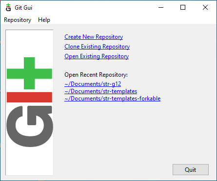
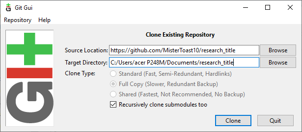
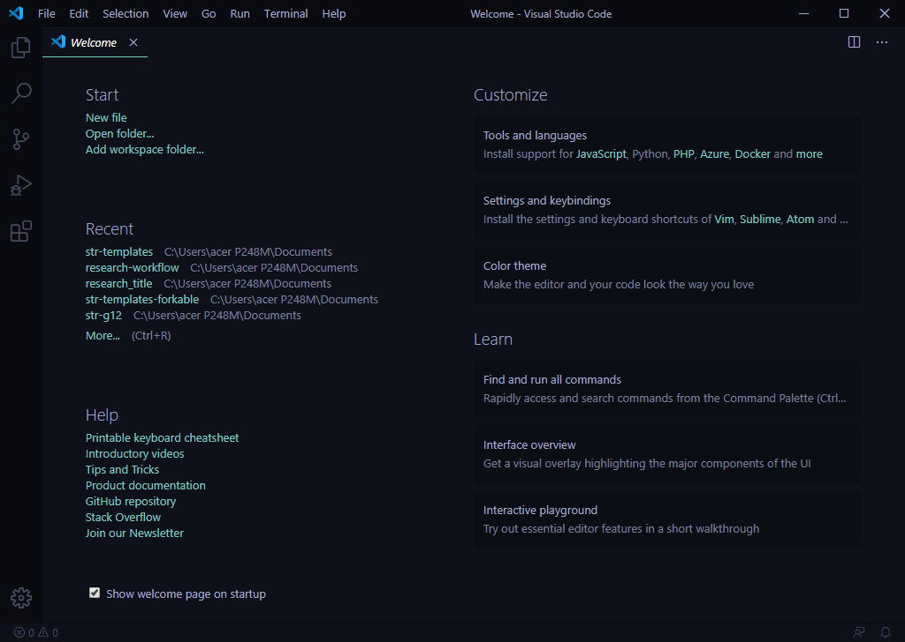
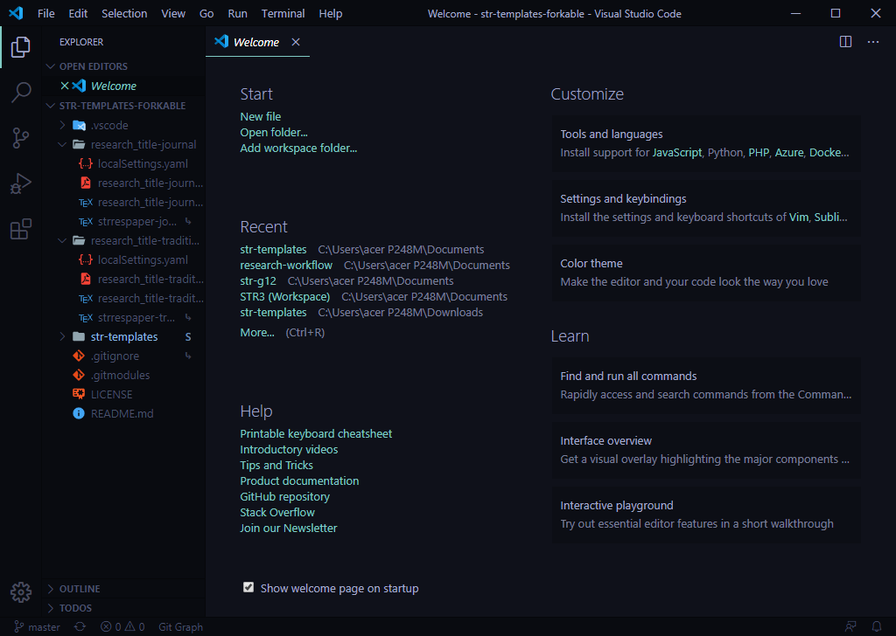
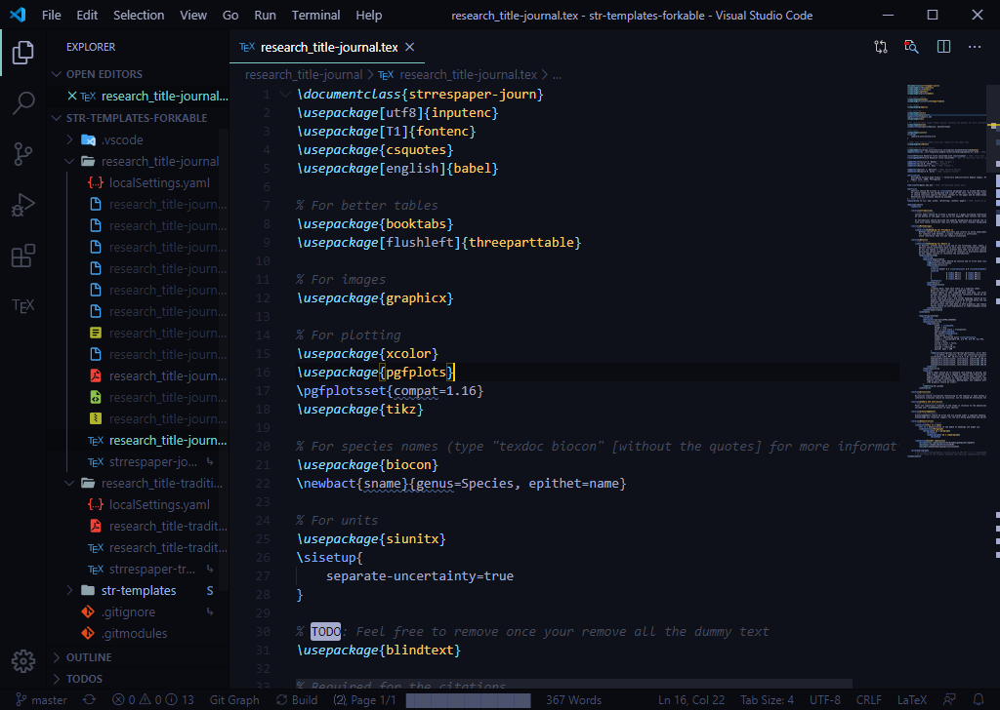
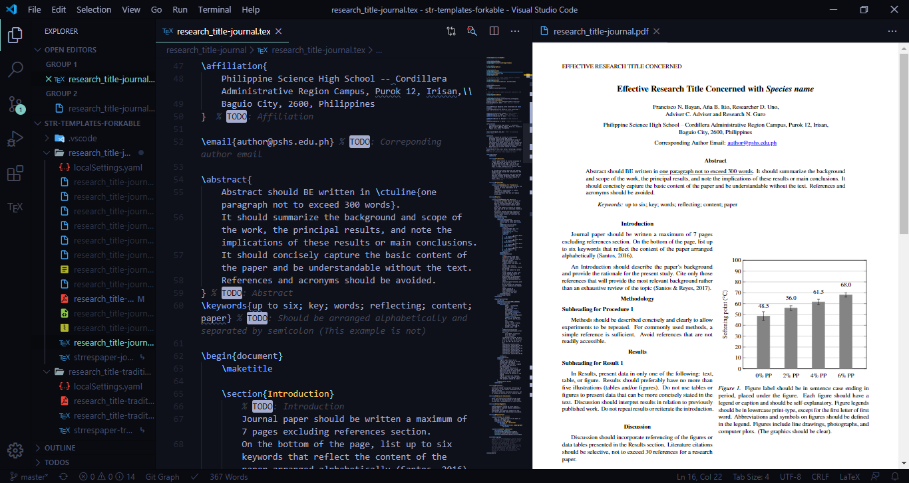
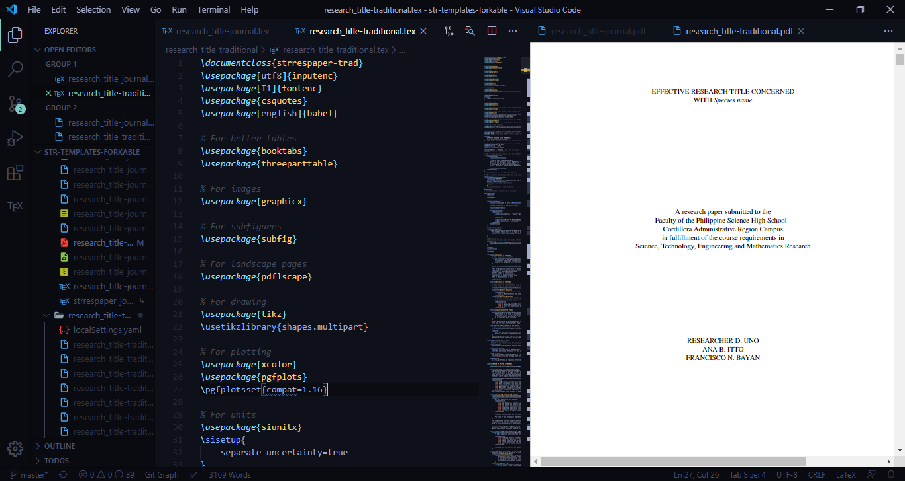

The LaTeX Templates
The LaTeX templates are provided in the str-templates repository
Forkable GitHub Repository
There is also a Forkable GitHub Repository that is ready to be used as a template and optimized for use within the workflow. Whenever the str-templates repository is updated, the template files in the forked repository can be updated using submodule update.
Forking the repository
To use the Forkable GitHub Repository, create a free GitHub Account and then simply fork from this repository and rename your fork based on your research title (e.g. research_title).
First Run
To use the templates, you must clone the fork into your computer via Git GUI. The following images show how the typical clone prompt will look like:


After cloning, rename the folders and files to change research_title into your actual research title.
After renaming everything, you may now initialize MikTeX.
To initialize MikTeX, you must first make sure that MikTeX Console is running.
After making sure that MikTeX is running, you may now open the research_title folder via Visual Studio Code.
Opening a folder is an option on the Welcome page (under the Start section) of Visual Studio Code, as shown here:

After opening the folder, a navigation bar will appear showing all the files in the folder. Make sure that what you see in the following image is similar to what you see in Visual Studio Code:

Open research_title-journal.tex and then press Ctrl+S to begin building the file.
A progress bar will appear.
Note: You need an Internet connection for the first compilation to initialize MikTeX.
This is what your window should look like:

To use text wrapping, press Alt+Z. To preview the PDF file produced, click the Preview button on the upper right corner of the window or press Ctrl+Alt+V. Using these commands will lead to a workspace that looks like this:

Do the same process for research_title-traditional.tex to initialize MikTeX for the Traditional Paper.
Your workspace will now look similar to this:

First Commit and Push
After performing the renaming and the initial runs, Git will automatically detect changes. Use Visual Studio Code to commit your changes and push them to your GitHub repository.
Traditional Paper
The Traditional Paper Template provides almost every macro required to write a properly formatted and complete paper, as well as writing tips from various sources.
Simply follow and delete each TODO comment in the file, filling in the content sections.
You may add TODO and FIXME comments in the file to take note of tasks in writing.
Once all the highlighted comments are removed, your paper is complete.
Journal Article
Once your Traditional Paper is complete, you may move on to writing your Journal Article.
Use the information in the Traditional Paper to produce an abridged version of your Traditional Paper that fits in seven pages.
The process is the same, simply follow and delete each TODO comment in the file, filling in the content sections.
You may also add TODO and FIXME comments in the file to take note of tasks in writing.
Once all the highlighted comments are removed, your article is complete.
Known Problems
Uppercasing is incompatible with the biocon package, therefore should you use scientific names in the journal article running head or traditional paper titles, you must type them out manually.
Alternatively, for the journal article running head, you may type out the common name instead.